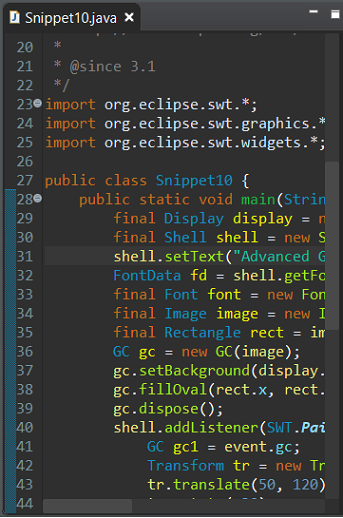

Platform Changes |
|
| BrowserViewer uses URISchemeHandler extensions |
The BrowserViewer now uses the extensions to org.eclipse.urischeme.uriSchemeHandlers.
When clicking a hyperlink with a non-default supported web browser URI scheme, the extensions are checked and if one can
handle the URI scheme, it will be triggered.
One example is Marketplace Client providing support for |
| Handle eclipse+command:// URLs |
eclipse+command:// Link handler makes the Eclipse application start a command.
Such URLs have the form This link handler must be activated from the Link handlers preference page to bind the Eclipse application with this URL scheme in the OS. |
SWT Changes |
|
| Support for dark scrollbars on Windows |
Support for dark scrollbars on Windows, sharing a screen-grab of how the dark-themed scrollbars look on Windows 10:

On Windows 10 the dark scrollbars can be enabled/configured using the -Dorg.eclipse.swt.internal.win32.enableDarkScrollbars=true |